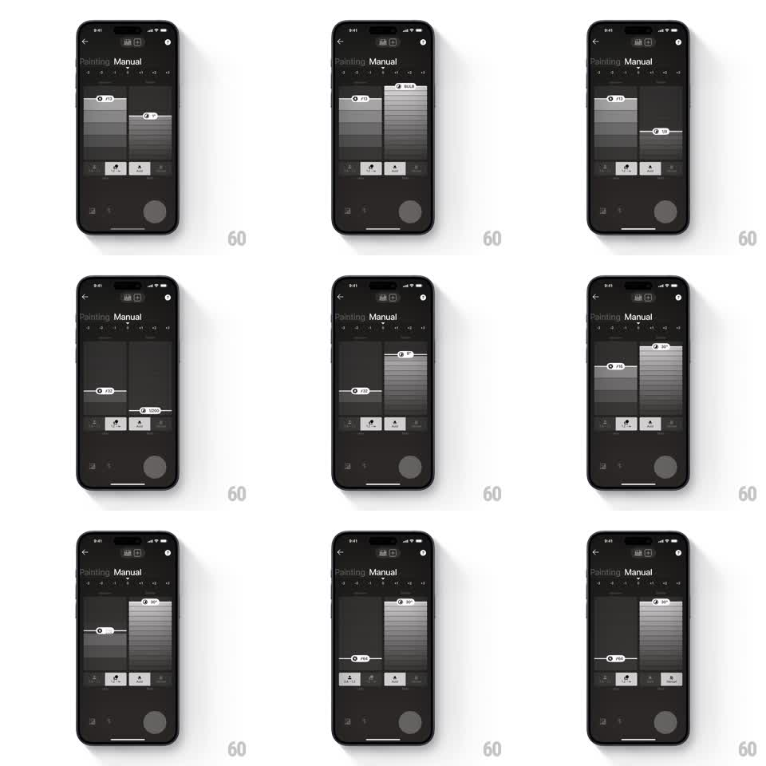

Media
Frame-by-frame

Rebuild this interaction 1:1: Polaroid's manual sliders - two vertical dial columns (aperture and shutter speed) with hatched fills and value handles that drag with physical detent snapping.

Rebuild this interaction 1:1: Polaroid's manual sliders - two vertical dial columns (aperture and shutter speed) with hatched fills and value handles that drag with physical detent snapping. ## Integration Integration: stack-agnostic spec - springs given as stiffness/damping, timed motions as duration + curve; map every value to your framework and animation library of choice. ## Scene Dark charcoal "Manual" screen (back chevron top-left). Two tall vertical tracks side by side: left for aperture (f/11, f/16, f/22...), right for shutter (BULB, 30", 1/30, 1/1000...). Each track has a diagonal-hatched fill region and a white pill handle carrying the current value. A bottom row of mode icons (light painting, aperture, shutter) and a faint shutter circle. ## Motion spec Pattern: vertical dial sliders with mechanical detents. - Dragging a handle vertically moves it 1:1 along its track; the hatched fill follows the handle (fills below on aperture, above on shutter). - Detents: the handle snaps to each stop (spring ~320/18) with a tick haptic; slow drags click stop to stop, fast flings glide and settle on the nearest stop with one soft bounce. - The value text inside the handle updates live as each detent is crossed (no crossfade - instant swap, like a physical dial). - The handle has a slight stretch while moving fast (scaleY 1 -> 1.15 along travel direction) settling back on snap. - Tapping a track position jumps the handle there (spring ~320/18) instead of scrubbing. - Bottom mode icons switch the active parameter set with a 200ms crossfade; the active icon inverts (white on dark). ## Calibration - Handles are pill-shaped, white, with dark text - maximum contrast against the charcoal. - Hatching animates smoothly during drag but never lags the handle by more than a frame. ## Reduced motion Handle jumps to the selected detent with a 150ms fade; no stretch. ## Don't miss - The two sliders are independent and can be dragged simultaneously. - BULB and long exposures (30") sit at the extremes of the shutter track - honor the full range.